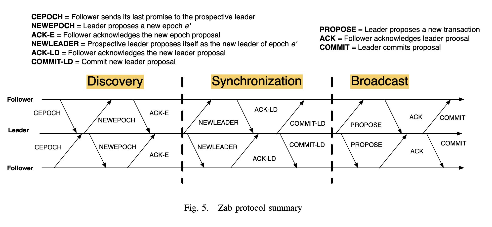
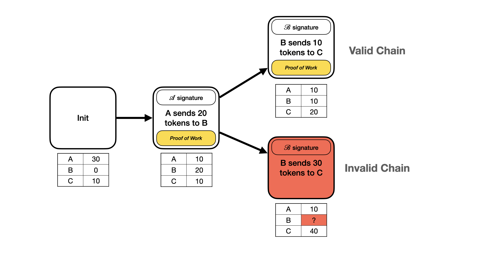

In a synchronous message passing system, there exists some known finite bound \(\Delta\) on message delays. That is, for any message sent, an adversary can delay its delivery by at most \(\Delta\). So, every process that sends messages at time \(t\) gets them delivered by time \(t+\Delta\). i.e., the whole system runs in lockstep, marching forward in perfectly synchronous rounds. For example, (Abraham et al. 2019) provides a standard (modern) description of the synchronous model:
If an honest party \(i\) sends a message to another honest party \(j\) at the beginning of a round, the message is guaranteed to reach by the end of that round. We describe the protocol assuming lock-step execution, i.e., parties enter and exit each round simultaneously. Later...we will present a clock synchronization protocol to bootstrap lock-step execution from bounded message delay.
In a fully asynchronous model, there is no upper bound on the delay for a message to be delivered, but we do assume that the delay is some finite value (e.g. chosen by an adversary). So, even though the message delay may be some unknown/unbounded quantity, we do assume that every message eventually gets delivered, even if the delay is unknown a priori.
The nature of asynchronous networks also implies that there is no way to have a perfect failure detector in a fully asynchronous system, since you can’t distinguish between a failed/stopped process and one whose messages are just taking a long time to get delivered.
The partial synchrony model aims to find a middle ground between the two above models. The assumption is that there exists some known finite time bound \(\Delta\) and a special event called GST (global stabilization time) such that:
The adversary must cause the GST event to eventually happen after some unknown finite time.
Any message sent at time \(x\) must be delivered by \(\Delta + max(x, GST)\). That is, after the GST, messages are delivered within the known finite time bound \(\Delta\) (i.e. the system has “reverted" to synchrony).
What are the fundamental differences between the synchronous and asynchronous models, and what exactly makes the latter harder?
There are some fundamental requirements to establish bounds for fault tolerance in an omission fault model. If an arbitrary set of \(f\) nodes can fail by stopping at any time, then this means that if we want a protocol that makes progress, we would need to ensure that any “work” we do (e.g. executing operations, writing down data, etc.) is made sufficiently redundant so that it can be accessed even in the case of maximum node failure. So, this implies we need to write all data to at least \(f+1\) nodes, so that there is always at least one non-faulty node with the data we need to access.
This seems to imply that having \(f+1\) nodes might be sufficient for a protocol to be fault tolerant. But, this doesn’t satisfy a progress requirement. That is, if we now need to write everything down to \(f+1\) nodes, then failure of \(f\) out of \(f+1\) nodes would clearly stall our protocol, since it can’t do any work safely. So, our additional requirement is that both:
Write any work down to \(f+1\) nodes.
Always have \(f+1\) non-faulty nodes available that we can write work down on.
Thus, this naturally gives us a total node requirement of \[\begin{aligned} n = (f+1) + f = 2f + 1 \end{aligned}\] That is, even in the case of \(f\) maximum node failures, we will always have \(f+1\) nodes available to us to write down our work, allowing us to make progress.
In order to achieve ACID guarantess of classic database systems in distributed setting, we typically rely on some kind of distributed transaction commit protocol (e.g. two-phase commit). The classic, gold standard approach for doing this in a distributed setting is to use some variant of two-phase commit protocol (Bernstein, Hadzilacos, and Goodman 1986). That is, we essentially ask multiple, separate partitions of the database data to prepare to commit their transactions (e.g. taking locks or marking the appropriate records) before we go ahead and commit, if all partitions agree.
In modern distributed database systems, a common architecture was to horizontally scale data by partitioning (e.g. sharding) and vertically scale for fault tolerance by having each shard run some kind of replication or consensus protocol (e.g. Paxos). This is more or less the approach taken by systems like Google’s Spanner (Corbett et al. 2012), which chunks up data into shards and runs a Paxos group/instance per-shard. Then, for running transactions across shards, it uses a variant of two-phase commit to run transactions at each shard that contains data involved in a transaction. This was also predated by related systems like Percolator (Peng and Dabek 2010) and Megastore (Baker et al. 2011).
These approaches can incur high latency, though, since 2PC + Paxos replication incurs a lot of round trips to commit a transaction. Optimizations of these various distributed two-phase transaction commit protocols appeared in similar time period, including MDCC (Kraska et al. 2013) and TAPIR (I. Zhang et al. 2015). Unanimous 2PC (Jensen et al. 2024) is a more recent approach that also gives a good overview of optimized commit protocols in this theme.
Approaches like Calvin (Thomson et al. 2012) take advantage of deterministic transaction scheduling to avoid the cost of full 2PC. Statically scheduling the transactions upfront at a sequencer process allows execution of transactions with guarantee of no conflicts, avoiding need for 2PC costs. This can often assume a one-shot transaction model, though, since a transaction’s full read/write sets are typically required in order to check conflicts when scheduling.
Classic database isolation levels have been re-examined and/or re-implemented in context of distributed transaction systems. Parallel snapshot isolation (PSI) (Sovran et al. 2011) is one example of this. In the classical definition of snapshot isolation, transactions must read from a snapshot that reflects a single global commit order of transactions, and transactions that write to the same key cannot run concurrently. PSI relaxes this by allowing transactions, for example, to commit in different orders at different geo-replicated sites, as long as they don’t have any causal relationship to each other.
The problem of consensus in a distributed system is to get a set of separate nodes to agree on a single value. That is, if one node marks a value as chosen, no other node can ever mark a different value as chosen. To understand the constraints of how we might solve this problem, we can start by thinking about this problem in a simpler setting e.g. a single (non-distributed) node. For an individual node/thread, solving consensus is trivial, since that node/thread can just write into a single register and then never change its decision. But, even when we introduce multiple concurrent clients (e.g. threads), the problem is nontrivial.
Paxos is a protocol for implementing consensus in an asynchronous distributed system assuming crash faults. Modeled as proposers, acceptors, and learners, and consists of 2 main phases, \(Prepare\) and \(Accept\). Proposers, which each own a disjoint set of a ballot space, propose values in one of their designated ballots, and send a \(Prepare(b)\) message for this ballot to a quorum of acceptors. Acceptors will respond to a \(Prepare(b)\) message if it is newer than the latest ballot they know about. A propoers, hearing a quorum of \(Prepare\) responses, then sends out an \(Accept(b,v)\) message for that ballot, where \(v\) is chosen either as the value with the highest ballot it hear about in \(Prepare\) phase, or as any value the proposer desires. Acceptors accept a value via an \(Accept\) message if the ballot is not older than their own latest known ballot. A value is committed at a ballot \(b\) if a quorum of acceptors have accepted that value at \(b\).
The classic consensus problem for Paxos is defined on a fixed set of \(n\) processes. In practice, though, as nodes fail over time we may need to remove them from the system and add in new ones, via reconfiguration. In standard “horizontal” Paxos algorithms, like the approach described in (Lamport 2001), the set of servers is made a part of the state machine state, and special “reconfiguration" comands on the state machine modify this set of servers. If the set of servers can change, though, then there needs to be some way of determining which set of servers implement what instances of the consensus algorithm. In one of Lamport’s original suggested approaches, we can allow a configuration command at instance \(i\) to take effect at instance \(i + \alpha\). So, we can propose commands up to \(\alpha\) slots after the reconfiguration, but no further, until we know whether the reconfiguration committed, so that we are sure we know the correct set of servers to consider.
In the above, “horizontal” Paxos approach, configurations change across Paxos instances, in accordance with the horizontal reconfiguration commands. Vertical Paxos (Lamport, Malkhi, and Zhou 2009) differs in that it allows for reconfiguration across Paxos ballots, even within the same instance. This is the “vertical” notion i.e. if you imagine instances as moving horizontally and Paxos ballots per instance laid out vertically. In the Vertical Paxos, they basically assume the existence of an external master that stores the configuration state across ballots, which itself can be implemented using state machine replication. Essentially, when a reconfiguration occurs in Vertical Paxos, the new configuratino becomes active right away, and the previous configuration remains active only for storing old information, and the new one accepts new commands.When the state of the previous configuration has been transferred to the new configuration, the new leader of the new config tells the master this is done, and the master can inform all future leaders that it no longer needs to contact the old configuration i.e., it deactivates the old config. This is essentially a kind of explicit management of state transfer and deactivation from old configs to new configs, albeit one that relies on a separate external master. So, in some sense, it still doesn’t fix the underlying problem of a state machine reconfiguration itself, but arguably has a clearer separation of concerns.
Classic Paxos takes 2 round trips to get a value committed (1 for the \(Prepare\) phase and 1 for the \(Commit\) phase). How could we do better than this? Fast Paxos (Lamport 2006) makes this improvement by having clients send their proposals directly to acceptors, rather than going through proposers first. This also changes quorum requirements, though. TODO.
Egalitarian Paxos (EPaxos) (Moraru, Andersen, and Kaminsky 2013) goes further by trying to achieve a leaderless scheme while also allowing for fast path commits. It relaxes notion of strict ordering between command slots by tracking only dependency between commands explicitly, and executing commands only when they are commmitted, and in accordance with this dependency order.
Zab (Junqueira, Reed, and Serafini 2011; Reed and Junqueira 2008) is a crash-recovery atomic broadcast algorithm used in Apache Zookeeper. The protocol consists of two main modes: broadcast and recovery.
In a stable system, it should be in broadcast mode, where a single leader is broadcasting transaction messages to a quorum of synchronized followers, until the leader fails or it no longer has a quorum of followers. Leaders will broadcast a proposal for a message to be delivered, and before doing this will assign a monotonically increasing unique id, the zxid. Delivered messages will be ordered by their zxids. When a leader receives ACKs from a quorum, the leader will broadcast a COMMIT message and deliver the message locally.
When the service starts or a leader fails, the system enters into recovery mode. Recovery and leader election is needed to ensure liveness in the face of leader failure. In a standard implementation zxids are 64-bit numbers where the lower 32 bits are a simple counter, and the higher order 32 bits are the epoch. The epoch is incremented by a new leader to something greater than the highest epoch it has seen, and then the counter is reset to zero. If the leader election protocol guarantees that the new leader has the highest proposal number in a quorum of servers, a newly elected leader will also have all committed messages.

Can see a TLA+ formal specificaton of the high level Zab protocol here, which is a part of the official Apache Zookeeper repo.
The earliest explicit reference to Byzantine faults appeared in (Lamport, Shostak, and Pease 1982), though earlier work had touched on the same problem without referring to it by that moniker (Pease, Shostak, and Lamport 1980; Wensley et al. 1978). They show in (Lamport, Shostak, and Pease 1982) that when using “oral” messages (i.e. non-signed) messages, a Byzantine agreement solution requires \(3f+1\) processes, even in a synchronous communication model. They give an algorithm that solves the problem assuming \(n > 3f+1\), and also show that if we allow for “written” (e.g. digitally signed) messages, then in the synchronous model Byzantine agreement can be achieved with only \(f+1\) processes.
The work on Practical Byzantine Fault Tolerance (PBFT) (Castro and Liskov 1999) considers an asynchronous distributed system where nodes are connected by a network which can fail to deliver messages, delay them, or deliver them out of order. Furthermore, it allows for Byzantine faults i.e., faulty nodes may behave arbitrarily, subject only to the above restrictions. This model does assume, however, cryptographic techniques that prevent spoofing and can detect corrupted messages. That is, Byzantine processes may send any arbitrary message, but we assume the identity of the sender of a message can be determined by the receiver (Lamport 2011). This can be achieved this with public-key signatures (Rivest, Shamir, and Adleman 1978), message authentication codes (MACs), etc.
If we assume a starting point of a classic 2-phase Paxos consensus approach, the following are some of the essential issues that arise and must be dealt with when we add in Byzantine faults:
Leader equivocation: if a leader is faulty (Byzantine), then it can trivially send two conflicting messages in the same view (i.e. with the same proposal number). This means that, for example, it could send out and accept messages with its own proposal number but with a different value to each replica. Then, we would end up with a quorum of replicas having accepted that proposal, but they all have different values, so which one is the true value to agree upon?
Wrong value adoption: A leader (faulty or not) that accepts a wrong value (i.e. not highest among previously) chosen can lead to safety violation as considered in the standard 2-phase Paxos model.
Need to have a way for honest acceptor to only accept values if they have actually have proof that
If a leader/proposer is Byzantine, we can imagine it as not being a “useful” participant of the protocol, in that it may only be trying to be malicious. And, we can’t control its behavior anyways, so we really need to worry about how acceptors can protect themselves against malicious leaders.
Normally, without Byzantine faults, acceptors can assume any incoming messages from proposers are legit, and they can respond with promises or acceptances accordingly.
With Byzantine faults, though, the info they would hear from a proposer can’t be trusted. So, can we force acceptors to somehow be more stringent in their acceptance of messages from proposers? In order to ensure they only actually accept messages from honest proposers?
In essence, have proposers record the info they received from a large enough set of honest acceptors, in order to prove to an acceptor that this info was collected. Basically, let acceptors require that proposers prove to them that they collected info about prior acceptances from enough honest acceptors. Since we assume no forging possible we can have acceptors sign info accordingly in a way that proves they actually had a certain piece of info.
Point: Acceptors will only accept if they have proof in the accept message that \(X\) number of honest acceptors stored a particular proposal.
So, proposers first try to do their proposals by asking around acceptors, from which they receive promises. Then, the proposer sends out another round of “real” proposer
The essence of the algorithm is as follows:
Primary sends a \(PrePrepare(value, p)\) message for view/proposal number \(p\).
Replica responds to the first \(PrePrepare\) message it receives from a primary.
Primary gathers \(PrePrepare\) responses from \(n-f\) replicas, and then sends \(Prepare(v, proof)\) (note this message may be linear in size since it contains signed codes fro m up to \(n\) nodes.)
If a replica sees \(Prepare(value, p, proof)\) and \(proof\) contains \(n-f\) valid signatures for \(PrePrepare(value, p)\), then it goes ahead and accepts.
Primary then gathers \(n-f\) \(Prepare\) responses from replicas.
Note that since we assume a public key infrastructure (PKI) set up between nodes of the system, any node can securely verify that a message was signed by some another node.
In Classic Paxos, we can think about 2a messages being sent to acceptors as a record of the proposer gathering some information about that proposal in phase 1: namely, that a quorum of acceptors promised to prepare in that round/ballot, and never accept proposals from earlier rounds. In a Byzantine setting, we can’t rely on a proposer/leader as an aggregator of this information, since a Byzantine leader can lie about any of this info. So, fundamentally, to achieve the same guarantees that we need before executing 2a messages in Classic Paxos, acceptors need to gather this information themselves, by simply broadcasting message queries to all other nodes and gathering responses.
If an acceptor can gather enough responses (\(2f\)) that other acceptors were prepared for a given proposal/round, then they can consider the proposal as accepted, and advance to learning/commit phase. If we assume at most \(f\) failures and \(3f+1\) acceptors, then if we get confirmation of \(2f+1\) prepares, we know that...?
Given \(n=3f+1\) nodes, for any 2 quorums with \(n-f = 2f+1\) nodes, we are guaranteed they intersect in at least \(f+1\) nodes (just draw a picture). Note that if you talk to at least \(f+1\) nodes then you are sure you are in contact with at least one non-faulty (non-Byzantine) node.
Decentralized currency have beomce a popular peer to peer consensus systems that operate under significantly different assumptions and fault models than previous systems.
Bitcoin (Nakamoto 2009) is the first widely used decentralized cryptocurrency. Nodes participate in a peer-to-peer network that implements a distributed ledger which records all transactions between parties, which can be uniquely identified using cryptogaphic keys (e.g. RSA private keys). The ledger can be viewed as a type of database, consisting of a series of blocks that record transactions on the database. The current state of the database can be considered as the state of the ledger after applying all transactions in the ledger.
Generally, we can view our current (or most any) money system as, more or less, a big old database. As Buterin states in (Buterin 2014):
…all a currency, or token systen, fundamentally is is a database with one operation: subtract X units from A and give X units to B, with the proviso that:
A had at least X units before the transaction.
The transaction is approved by A.
Every user/client of the database can have an account in this database, which records the current amount of money in their account (i.e. “wallet”). Transactions are then executed by atomically transferring money from one account to another, by deducting some amount \(X\) from user \(A\)’s account and adding \(X\) to user \(B\)’s account, with the restriction that \(A\) cannot send \(X\) dollars to some other account if it does not have at least \(X\) dollars. And, the transaction that completes between two accounts must occur atomically (consistently), before any other transactions take place. That is, we can think about all transactions as being serialized into a big list of transactions, which make up the ledger or history of the database. More generally, we can also consider this ledger itself as the current state of the database, since this state can always be computed by simply applying all transactions from the beginning of the ledger. We also might assume that there may be some special entries in this ledger that put new money into circulation by giving it to some account without requiring it to be transferred from an existing account.
If you try to build a money system on this decentralized ledger/database model, you have the obvious initial problem of how we update the database consistently and safely without the use of some central trusted authority. We can imagine that everyone has a copy of the full ledger, and can choose to make arbitrary updates to it locally e.g. even ones that break the no double spending consistency property i.e., people could arbitrarily choose to spend money they don’t have, breaking property 1 above. Additionally, we can assume that each party in the network can be uniquely identified by some cryptographic signing scheme e.g., each by their unique, private RSA key. They can mark a transaction between themselves, party \(A\) and another user, party \(B\), by referring to the public key of \(B\) and signing the transaction with \(A\)’s private key. Based on this, other parties can then verify that \(A\) was indeed the one who sent some money to \(B\).
If everyone is updating their forks of the ledger independently, though, each with some potentially unsafe transactions, how do we enforce safety in a distributed fashion? Well, we must assume that there are at least some amount of honest nodes in the network that want to do good i.e., they are actually honest in wanting to only make sure that valid chains are kept in the system. Under this assumption, we can then use some mechanism that allows the honest agents to “outvote” the bad players when deciding on the correctness of the ledger. This can be implemented with the proof of work concept.
Basically, we imagine appending a special nonce to each transaction, such that the original transaction concatenated with this nonce makes up the full transaction that goes into the chain. In order for a transaction be valid, though, we require some property of the hashed block be true that is computationally hard to invert. For example, by requiring that the SHA-256 hash of the original block plus the nonce starts with some number of zero bits. If this property holds true, then the transaction/block is considered valid, and this means fiddling with the data of the transaction would be computationally hard, since you would have to re-solve for a valid nonce. So, this implicitly ensures that votes are given to those with CPU power, and so if enough CPUs are “honest”, then we have a good guarantee that honest nodes will win out in selecting the true ledger.

In order to make a block “valid”, you have to sign it with a special hash that is based on the block’s content, and is computationally hard to come up with. This is the proof of work. So, if you’ve sent out a valid block with a valid proof of work, it means you must have spent some amount of computational work on creating this block. This serves as the kind of “voting” power, allowing the larger pool of computational resources in the network to outvote any minority of bad actors, since, on average, this larger pool will win out in creating valid blocks and extending their chain.
Ethereum, originally published in a whitepaper (Buterin 2014) in 2014 by Vitalik Buterin, is a newer alternative to Bitcoin that is based on similar ideas and goals. Most notably, it introduces an explicit way to implement smart contracts within the Ethereum blockchain, which allows for more elaborate financial contracts and transactions to be carried out between parties in the system. This can be viewed as a kind of generalization of the basic banking state transition model of Bitcoin, that only allowed users to send value between each other without more complex contractual logic determining rules on how value can flow between parties.
In Ethereum, the global system state is made up of objects called accounts, which are each identified by a 20-byte address. Transactions are direct transfers of value and information between accounts. An Ethereum account contains four fields:
nonce: a counter to ensure transactions are processed once.
ether balance: the current balance of the account.
contract code: if present.
storage: which is empty by default.
and there two different types of accounts:
Externally owned accounts: controlled by private keys. These accounts have no code, and you can send messages from such an account by creating and signing a transaction.
Contract accounts: controlled by their contract code. In these accounts, every time the contract account receives a message its code activates, allowing it to read and write to internal storage, send other messages, or create new contracts.
A message in Ethereum is similar to a “transaction" in Bitcoin, but differs in that an Ethereum message can be created either by an external entity or by a contract, whereas a Bitcoin transaction can only be created externally. There is also an explicit option for Ethereum messages to contain data. Finally, the recipient of an Ethereum message, if it is a contract account, has the option to return a response, which means that Ethereum messages also encompass the concept of functions.
Transactions in Ethereum contain the recipient of the message, a signature identifying the sender, the amount of ether and the data to send, as well as two values called STARTGAS and GASPRICE. To prevent exponential blowup and infinite loops in execution of contract code, each transaction is required to set a limit to how many computational steps of code execution it can spawn, including both the initial message and any additional messages that get spawned during execution. STARTGAS is the limit on computational steps, and GASPRICE is the fee to pay to the miner per computational step.
Although smart contracts allow for secure, decentralized policies to be implemented within a blockchain network (e.g. in Ethereum) it is often the case that these contracts may want to use data sources that come from the outside wordl (e.g. stock stickers, weather, etc.). Mechanisms are needed for pulling in this data in a secure fashion, so that the security of the underlying contract is not compromised in cases where the external data source may also be compromised. A blockchain oracle (F. Zhang et al. 2016; Breidenbach et al. 2021) is a third party service that connects a smart contract with the outside world, in an effort to address this issue.
Some of these oracle systems (F. Zhang et al. 2016) rely on running partially inside trusted execution environments, like Intel SGX.